13 NCBI RefSeq reference genomes (one per recognised species). Annotated with Prokka v1.14.6 · ANI by FastANI v1.34 · pangenome by Roary v3.13 · ML phylogeny by IQ-TREE v2.2.2.7 · UPGMA from ANI distances · resistome/virulome by ABRicate v1.2.
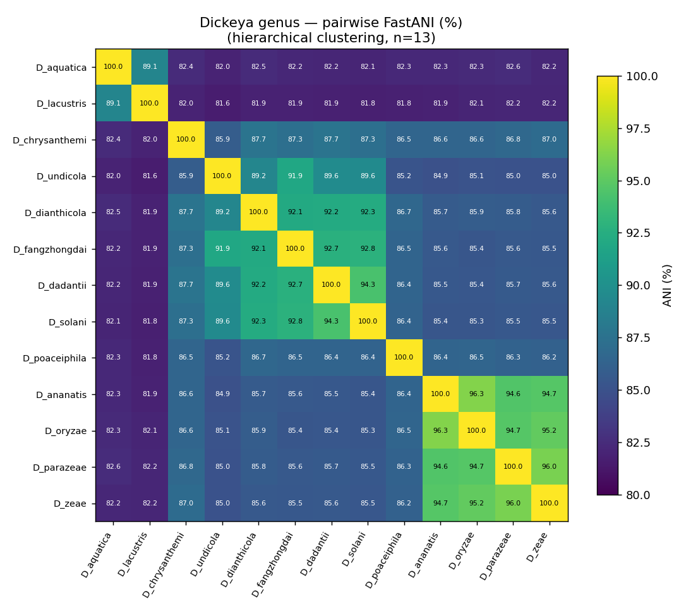
Hierarchical clustering of all 13 vs 13 ANI values. The 95% species threshold clearly separates the four soft-rot members (94-96% within-clade ANI) from everything else.
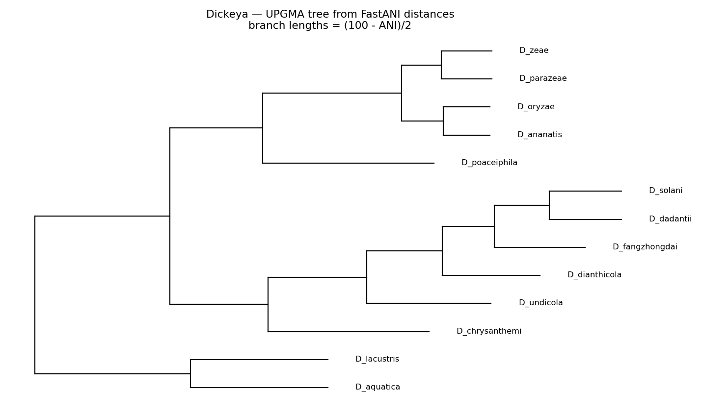
Whole-genome relatedness; recovers the soft-rot and vascular-wilt clades.
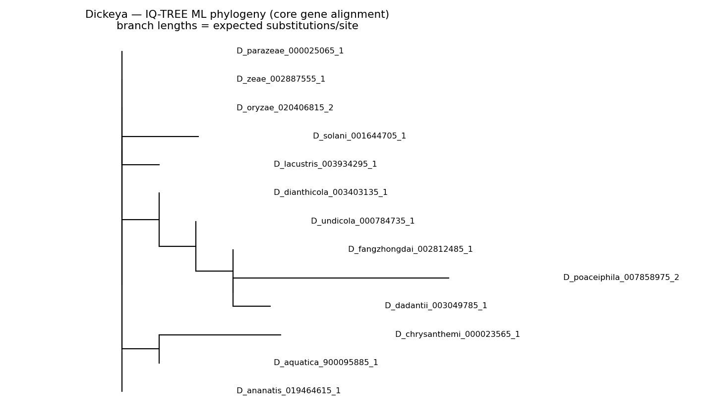
Caveat: Roary's MAFFT-mode core alignment was only 498 bp here (most of the 608 core gene families failed to align cleanly across the distantly-related species). The ML tree is therefore poorly resolved at deep nodes — the ANI tree is the more reliable species-level summary for this genus.
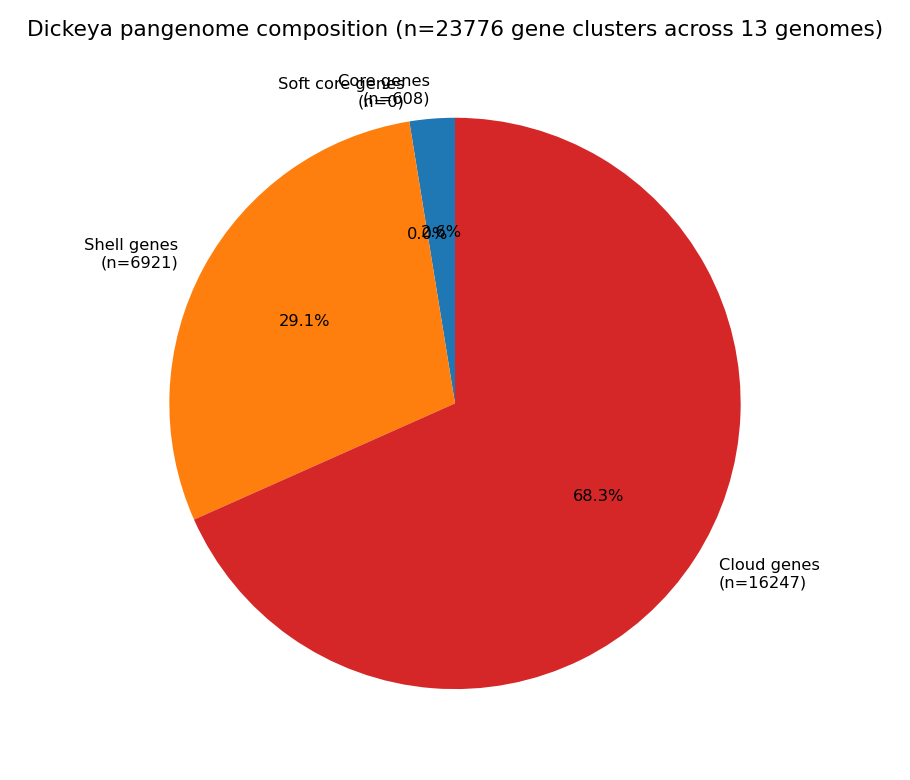
| Core genes | 608 |
| Soft core genes | 0 |
| Shell genes | 6,921 |
| Cloud genes | 16,247 |
| Total | 23,776 |
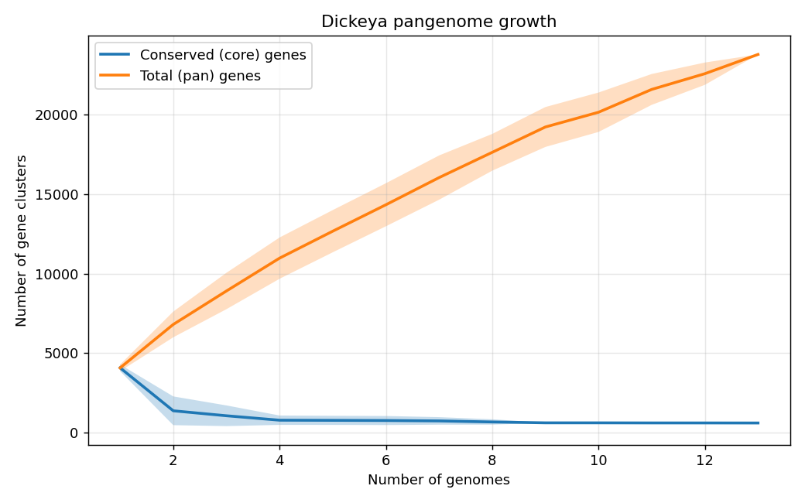
Open pangenome — pan-genome continues to grow with each added genome.
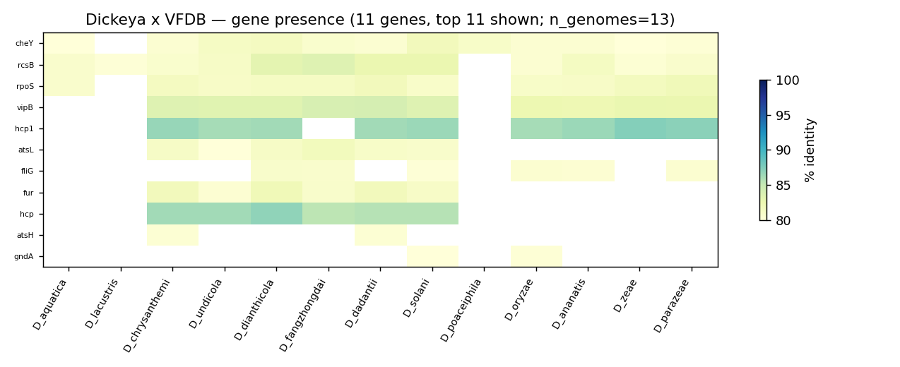
The Type 6 Secretion System (T6SS) components hcp1 / hcp / vipB,
the flagellar motor switch fliG, the iron-uptake regulator fur,
and the stress-response sigma factor rpoS are conserved across the
clinically relevant clades. D. aquatica / D. lacustris / D. poaceiphila
carry only 1-3 of these, consistent with their less aggressive plant-pathogenic
phenotypes.
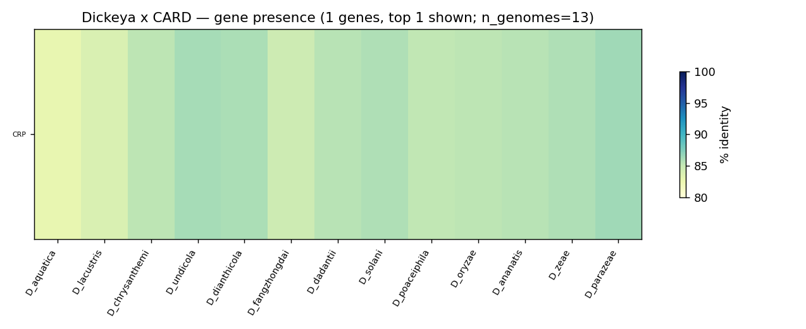
Only the universally-present regulator CRP is detected.
Dickeya is a plant pathogen, not a clinical isolate — there is essentially
no acquired antibiotic resistance burden in the genus.
| genome | vfdb | card | plasmidfinder |
|---|---|---|---|
| D_ananatis | 8 | 1 | 0 |
| D_aquatica | 3 | 1 | 0 |
| D_chrysanthemi | 12 | 1 | 0 |
| D_dadantii | 10 | 1 | 0 |
| D_dianthicola | 9 | 1 | 0 |
| D_fangzhongdai | 9 | 1 | 1 |
| D_lacustris | 1 | 1 | 0 |
| D_oryzae | 9 | 1 | 2 |
| D_parazeae | 7 | 1 | 0 |
| D_poaceiphila | 1 | 1 | 0 |
| D_solani | 11 | 1 | 0 |
| D_undicola | 10 | 1 | 3 |
| D_zeae | 7 | 1 | 0 |
Phenotypes derived from ANI clade membership (binary). Top-10 hits with sensitivity & specificity ≥ 80% shown.
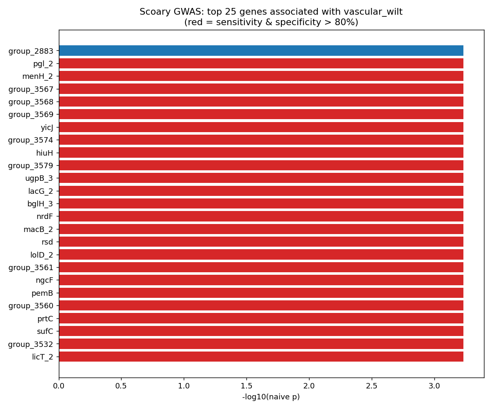
| gene | annotation | sens% | spec% |
|---|---|---|---|
group_2883 | hypothetical protein | 0 | 0 |
pgl_2 | 6-phosphogluconolactonase | 100 | 100 |
menH_2 | hypothetical protein | 100 | 100 |
group_3567 | hypothetical protein | 100 | 100 |
group_3568 | Phosphoglycolate phosphatase | 100 | 100 |
group_3569 | hypothetical protein | 100 | 100 |
yicJ | Inner membrane symporter YicJ | 100 | 100 |
group_3574 | Beta-xylosidase | 100 | 100 |
hiuH | 5-hydroxyisourate hydrolase | 100 | 100 |
group_3579 | hypothetical protein | 100 | 100 |
Top hits include the known Dickeya virulence factors
prtC (Zn-metalloprotease) and pemB
(pectin methylesterase) — enzymes that degrade plant cell walls.
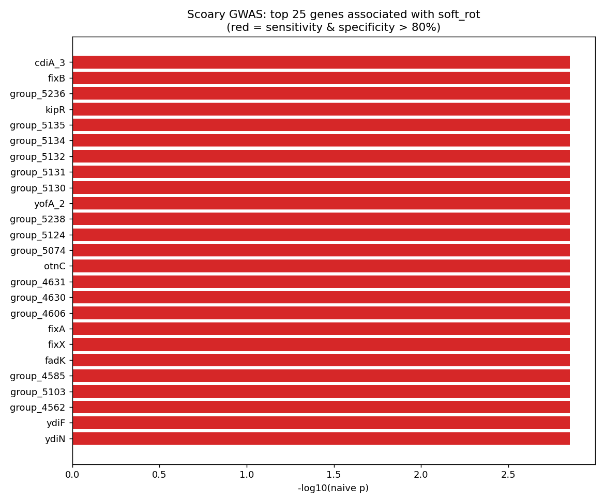
| gene | annotation | sens% | spec% |
|---|---|---|---|
cdiA_3 | hypothetical protein | 100 | 100 |
fixB | Protein FixB | 100 | 100 |
group_5236 | Electron transfer flavoprotein-ubiquinone oxidoreductase | 100 | 100 |
kipR | HTH-type transcriptional regulator KipR | 100 | 100 |
group_5135 | hypothetical protein | 100 | 100 |
group_5134 | High-affinity branched-chain amino acid transport ATP-bindin | 100 | 100 |
group_5132 | hypothetical protein | 100 | 100 |
group_5131 | Vitamin B12 import ATP-binding protein BtuD | 100 | 100 |
group_5130 | Transcriptional activator protein AnoR | 100 | 100 |
yofA_2 | HTH-type transcriptional regulator YofA | 100 | 100 |
Soft-rot accessory genes are enriched for
cdiA (contact-dependent inhibition toxin),
fixA/B/X (nitrogen fixation, anaerobic adaptation),
fadK (fatty-acid metabolism) — competition and
environmental-tolerance traits rather than direct virulence.
| Phenotype | positives | candidate genes | Bonferroni-sig (p<0.05) |
|---|---|---|---|
| vascular_wilt | 202 | 13,098 | 4,648 |
| soft_rot | 46 | 9,925 | 4,197 |
| is_solani | 51 | 7,777 | 3,373 |
| is_dianthicola | 87 | 9,661 | 4,857 |
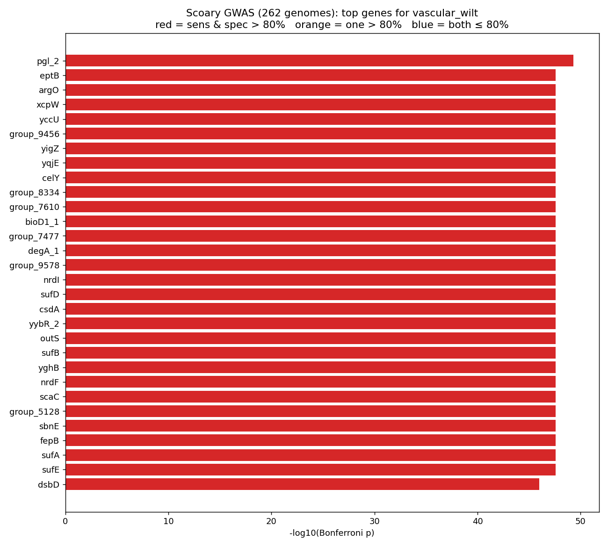
| gene | annotation | Bonf p | sens% | spec% |
|---|---|---|---|---|
pgl_2 | 6-phosphogluconolactonase | 4.9e-50 | 100 | 95 |
eptB | Kdo(2)-lipid A phosphoethanolamine 7''-transferase | 2.5e-48 | 100 | 93 |
argO | Arginine exporter protein ArgO | 2.5e-48 | 100 | 93 |
xcpW | Type II secretion system protein J | 2.5e-48 | 100 | 93 |
yccU | putative protein YccU | 2.5e-48 | 100 | 93 |
group_9456 | hypothetical protein | 2.5e-48 | 100 | 93 |
yigZ | IMPACT family member YigZ | 2.5e-48 | 100 | 93 |
yqjE | Inner membrane protein YqjE | 2.5e-48 | 100 | 93 |
celY | Minor endoglucanase Y | 2.5e-48 | 100 | 93 |
group_8334 | hypothetical protein | 2.5e-48 | 100 | 93 |
group_7610 | hypothetical protein | 2.5e-48 | 100 | 93 |
bioD1_1 | ATP-dependent dethiobiotin synthetase BioD 1 | 2.5e-48 | 100 | 93 |
Coordinated virulence module: Type II Secretion
System (xcpW, outS) + minor endoglucanase
celY + the full SUF Fe-S cluster assembly operon
(sufA/B/D/E) + iron-acquisition (fepB,
sbnE) + outer-membrane integrity
(eptB, dsbD). This is the canonical
plant-cell-wall-degrading + secretion machinery of soft-rot
Pectobacteriaceae.
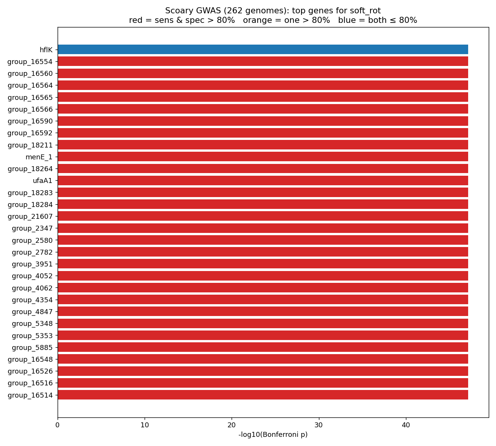
| gene | annotation | Bonf p | sens% | spec% |
|---|---|---|---|---|
hflK | Modulator of FtsH protease HflK | 7.2e-48 | 0 | 0 |
group_16554 | putative Nudix hydrolase NudL | 7.2e-48 | 100 | 100 |
group_16560 | Glutaredoxin 2 | 7.2e-48 | 100 | 100 |
group_16564 | Protein YeeZ | 7.2e-48 | 100 | 100 |
group_16565 | hypothetical protein | 7.2e-48 | 100 | 100 |
group_16566 | hypothetical protein | 7.2e-48 | 100 | 100 |
group_16590 | hypothetical protein | 7.2e-48 | 100 | 100 |
group_16592 | Secretion monitor | 7.2e-48 | 100 | 100 |
group_18211 | HTH-type transcriptional regulator AcrR | 7.2e-48 | 100 | 100 |
menE_1 | 2-succinylbenzoate--CoA ligase | 7.2e-48 | 100 | 100 |
group_18264 | Biofilm growth-associated repressor | 7.2e-48 | 100 | 100 |
ufaA1 | Tuberculostearic acid methyltransferase UfaA1 | 7.2e-48 | 100 | 100 |
Negative signal of note: hflK
(FtsH protease modulator) sensitivity = 0% — i.e. the gene is
missing in soft-rot strains while present elsewhere. Other top
hits are clade-specific accessory clusters not yet annotated.
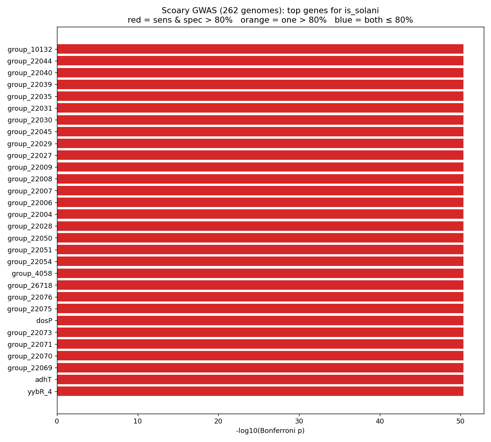
| gene | annotation | Bonf p | sens% | spec% |
|---|---|---|---|---|
group_10132 | Acyl carrier protein | 4.5e-51 | 100 | 100 |
group_22044 | hypothetical protein | 4.5e-51 | 100 | 100 |
group_22040 | Mannosyl-3-phosphoglycerate phosphatase | 4.5e-51 | 100 | 100 |
group_22039 | hypothetical protein | 4.5e-51 | 100 | 100 |
group_22035 | Protein YobA | 4.5e-51 | 100 | 100 |
group_22031 | HTH-type transcriptional repressor RspR | 4.5e-51 | 100 | 100 |
group_22030 | hypothetical protein | 4.5e-51 | 100 | 100 |
group_22045 | hypothetical protein | 4.5e-51 | 100 | 100 |
group_22029 | 2-amino-5-chloromuconic acid deaminase | 4.5e-51 | 100 | 100 |
group_22027 | Fosfomycin resistance protein AbaF | 4.5e-51 | 100 | 100 |
group_22009 | hypothetical protein | 4.5e-51 | 100 | 100 |
group_22008 | hypothetical protein | 4.5e-51 | 100 | 100 |
Top hits include dosP (c-di-GMP
phosphodiesterase, biofilm regulation), AbaF
(fosfomycin-resistance efflux pump — the genus's only meaningful AMR
signal), XynC (glucuronoxylanase, plant cell wall
degradation) and TatB (Sec-independent secretion).
Identical-pBonf tied genes share the same presence/absence
vector but, as section 8 shows, are scattered across the chromosome
rather than co-located — except for one genuine 5-gene operon
around AbaF.
| gene | annotation | Bonf p | sens% | spec% |
|---|---|---|---|---|
group_11717 | hypothetical protein | 3.1e-67 | 100 | 100 |
cusR | Transcriptional regulatory protein CusR | 3.1e-67 | 100 | 100 |
group_22089 | hypothetical protein | 3.1e-67 | 100 | 100 |
yihI | Der GTPase-activating protein YihI | 3.1e-67 | 100 | 100 |
group_20137 | hypothetical protein | 3.1e-67 | 100 | 100 |
group_18664 | hypothetical protein | 3.1e-67 | 100 | 100 |
group_18662 | hypothetical protein | 3.1e-67 | 100 | 100 |
yknZ | hypothetical protein | 3.1e-67 | 100 | 100 |
aaeA_1 | p-hydroxybenzoic acid efflux pump subunit AaeA | 3.1e-67 | 100 | 100 |
group_18654 | hypothetical protein | 3.1e-67 | 100 | 100 |
group_18650 | hypothetical protein | 3.1e-67 | 100 | 100 |
pxpA_3 | 5-oxoprolinase subunit A | 3.1e-67 | 100 | 100 |
Strongest signal in the dataset (Bonferroni
p ≈ 10-67). Highlights: cusR (copper sensing
regulator → host metal-stress adaptation), bifunctional cytochrome
P450/NADPH reductase, aaeA efflux pump,
glnQ (glutamine transport). Profile consistent with
the hardened metabolic envelope of an aggressive carnation pathogen.
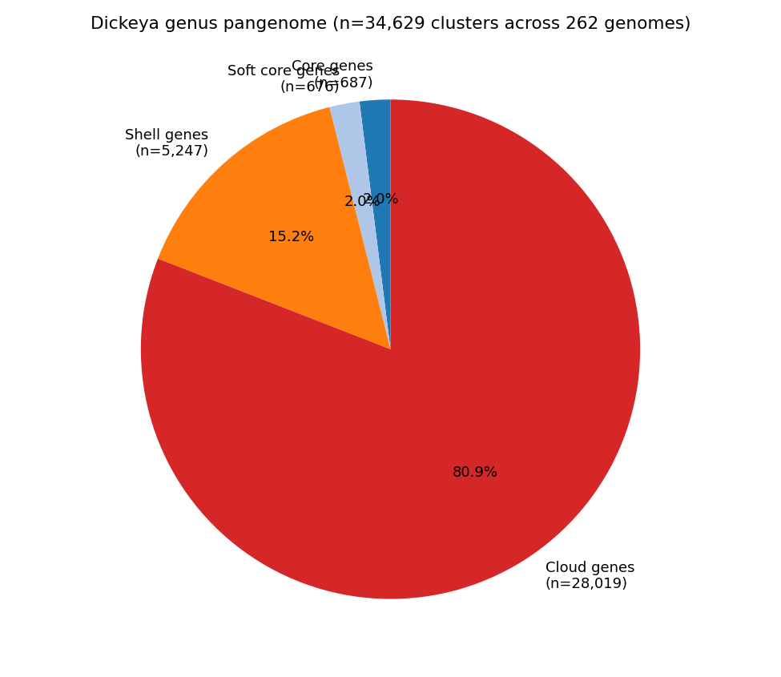
| Core genes | 687 |
| Soft core genes | 676 |
| Shell genes | 5,247 |
| Cloud genes | 28,019 |
| Total clusters | 34,629 |
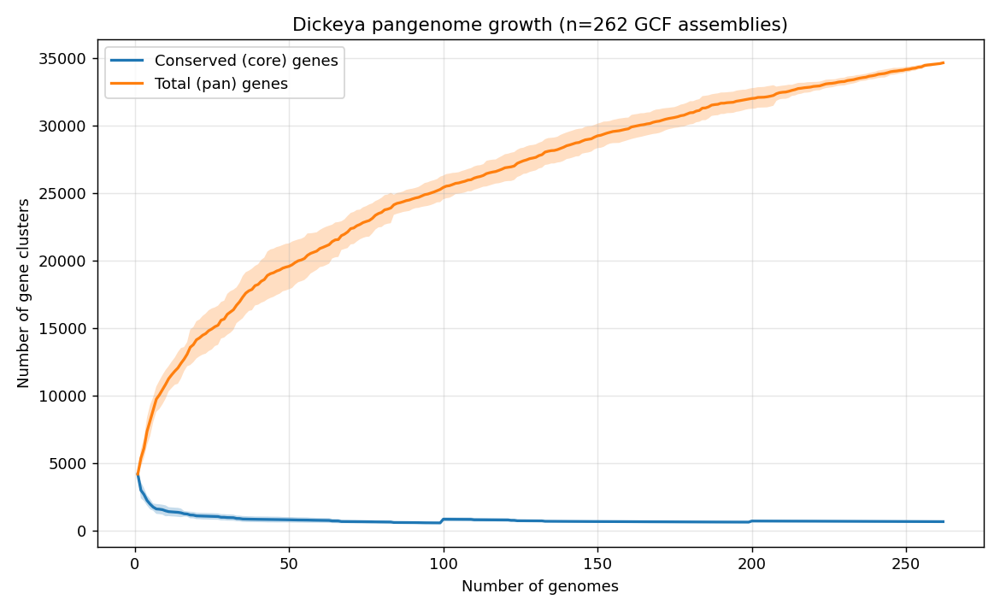
Pan-genome still climbing at n=262 — Dickeya genus is a strongly open pangenome. Core stabilises near 687 genes from ~30 strains onward, confirming the 13-genome estimate (608) was already close to the true genus core.
Compared to the 13-genome run: core barely changed (+13%) while cloud genes grew +72% to 28,019 — every new strain still contributes unique accessory content.
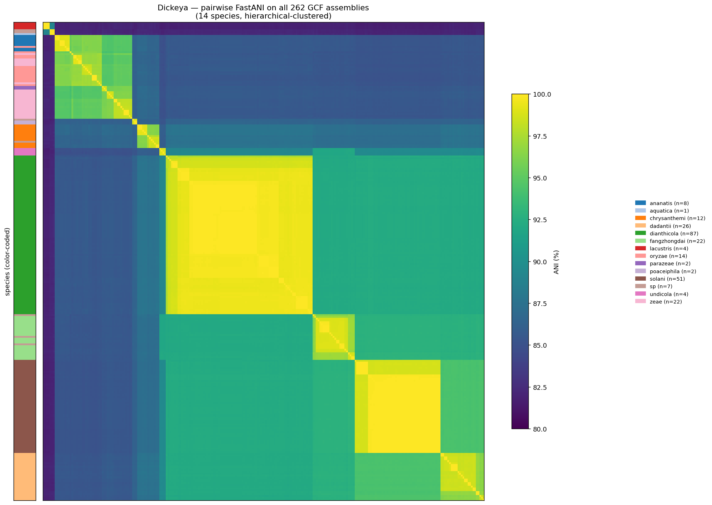
All 262 GCF (RefSeq) Dickeya assemblies, FastANI all-vs-all (≈70k pairs). Each row/col is a single assembly; the colour stripe on the left marks species. Yellow squares (≥97% ANI) recover textbook-clean species clusters with two interesting outliers:
| 262-genome species ANI ranges |
|---|
D. ananatis n= 8 min=98.91 median=99.05 max=99.99 |
D. chrysanthemi n= 12 min=96.19 median=96.44 max=99.99 |
D. dadantii n= 26 min=96.28 median=98.41 max=100.00 |
D. dianthicola n= 87 min=97.34 median=99.50 max=100.00 |
D. fangzhongdai n= 22 min=96.77 median=98.74 max=100.00 |
D. lacustris n= 4 min=99.97 median=99.98 max=99.99 |
D. oryzae n= 14 min=95.26 median=97.14 max=99.99 |
D. parazeae n= 2 min=98.70 median=98.70 max=98.70 |
D. poaceiphila n= 2 min=99.92 median=99.92 max=99.92 |
D. solani n= 51 min=98.56 median=99.96 max=100.00 |
D. sp n= 7 min=81.67 median=86.27 max=99.89 |
D. undicola n= 4 min=98.90 median=99.00 max=99.12 |
D. zeae n= 22 min=94.40 median=96.17 max=100.00 |
The 30 top is_solani Scoary hits all share the same presence/absence
vector (every solani strain has them, every other species lacks them) and
therefore tie at pBonf ≈ 4.5 × 10-51. When we map
those locus tags back to the type-strain GFF (GCF_001644705.1,
D. solani IPO 2222), the 30 genes turn out to be scattered across
4.17 Mb of the chromosome — not a single inherited island.
Five of them, however, are co-located in a tight ~5 kb operon-style block at 4.195-4.200 Mb:
| locus | strand | position | annotation |
|---|---|---|---|
abaF_2 | - | 4,195,388-4,196,701 | Fosfomycin-resistance MFS efflux pump |
DNMKAHCA_03629 | - | 4,196,694-4,197,329 | hypothetical |
cnbH | - | 4,197,332-4,198,675 | 2-amino-5-chloromuconic acid deaminase |
DNMKAHCA_03631 | - | 4,198,686-4,199,366 | hypothetical |
rspR_2 | + | 4,199,480-4,200,154 | HTH-type transcriptional repressor RspR |
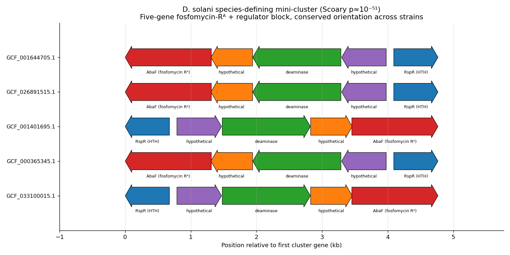
Gene order, spacing and relative orientation are perfectly preserved; only the chromosomal coordinate origin differs (artefact of how each assembly was rotated when circularised).
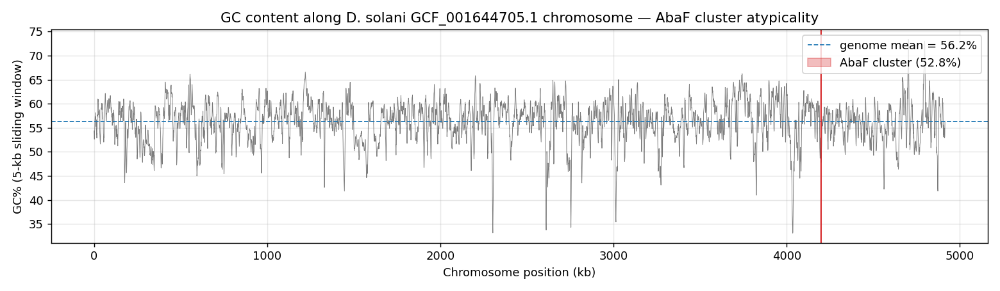
Cluster GC% = 52.82%, vs whole-chromosome mean 56.24% — a 3.42-point dip at the 18th percentile of all 5 kb windows. Lower-than-host GC is a classical fingerprint of horizontal acquisition.
| signal | finding | verdict |
|---|---|---|
| operon-style gene order | 5/5 strains preserved | ✓ inherited as a unit |
| GC% deviation | -3.4% from genome mean (18th %ile) | ✓ HGT-suggestive |
| tRNA flanking | tRNA-Pro(ggg) at 4,204,505 — 4.4 kb downstream | ✓ classic integration target |
| transposase / integrase / IS / phage in ±10 kb | none detected | ✗ direct mobility marker missing |
| flanking direct repeats | not assessed | ? |
Best-fit model: an ancient horizontal acquisition that integrated near the tRNA-Pro and was subsequently fixed in the D. solani lineage; the mobilising element itself has eroded over time, leaving the tRNA-Pro hotspot and atypical GC% as the only remaining footprints. The cargo — a fosfomycin-resistance efflux pump flanked by an aromatic-amine deaminase and an HTH regulator — looks like a xenobiotic-detoxification cassette, plausibly an adaptation to soil/rhizosphere antimicrobial pressure.
Pangenome representatives (one protein per Roary cluster, 34,629 total)
were searched against COG-2024 with DIAMOND blastp (≥1e-5, very-sensitive).
Each best-hit COG was mapped to its functional-category letter via
cog-24.def.tab; multi-letter assignments were exploded.
| bucket | n clusters | % mapped to COG |
|---|---|---|
| core | 687 | 79.8% |
| soft_core | 676 | 61.4% |
| shell | 5,247 | 45.6% |
| cloud | 28,019 | 27.9% (the rest = unclassifiable accessory dark matter) |
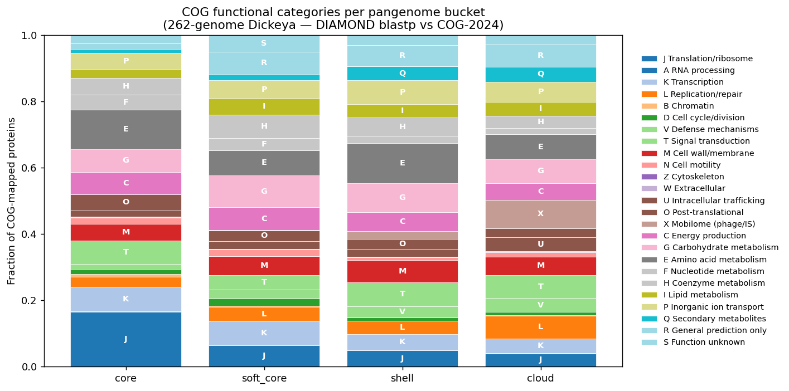
Translation/ribosome (J) dominates the core (16.6%) and shrinks to 3.9% in the cloud — the canonical signature of essential machinery being conserved.
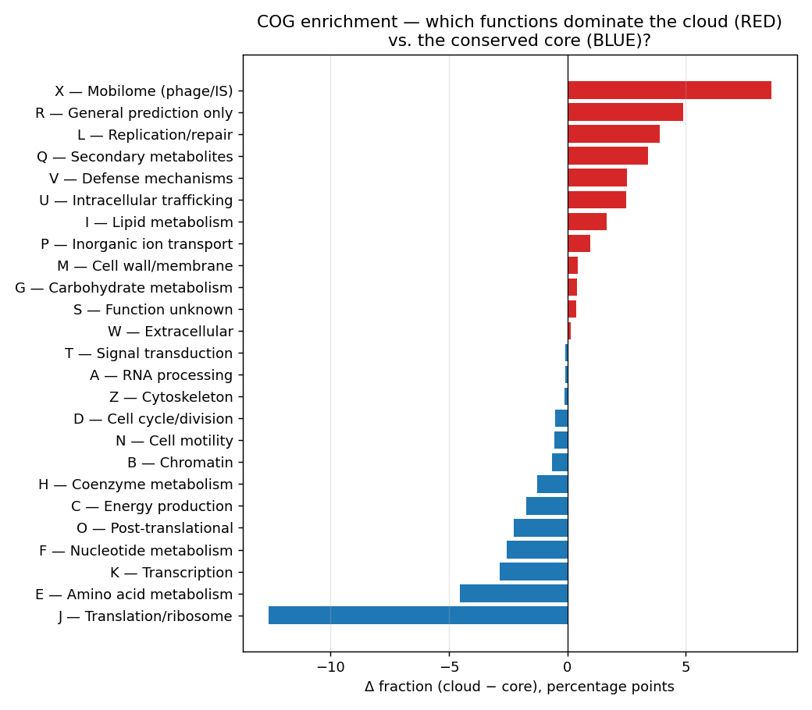
Categories that dominate one bucket but not the other, in percentage points. Red = enriched in cloud, blue = enriched in core.
| cat | core % | cloud % | Δpp | description |
|---|---|---|---|---|
| X | 0.00 | 8.64 | +8.64 | Mobilome (phage/IS) |
| R | 1.80 | 6.71 | +4.90 | General prediction only |
| L | 2.95 | 6.85 | +3.90 | Replication/repair |
| Q | 1.15 | 4.55 | +3.41 | Secondary metabolites |
| V | 1.64 | 4.15 | +2.51 | Defense mechanisms |
| cat | core % | cloud % | Δpp | description |
|---|---|---|---|---|
| J | 16.56 | 3.93 | -12.63 | Translation/ribosome |
| E | 11.97 | 7.45 | -4.52 | Amino acid metabolism |
| K | 7.38 | 4.51 | -2.87 | Transcription |
| F | 4.43 | 1.88 | -2.54 | Nucleotide metabolism |
This corroborates the AbaF mini-cluster finding from section 8: when we zoom into one specific Scoary hit we find xenobiotic-detoxification cargo near a tRNA integration hotspot with atypical GC%; when we zoom out to the whole pangenome we find the same mechanism (mobile DNA) is the dominant driver of accessory diversity across the entire genus.
bioflow ncbi genome --taxon dickeya
--reference-only --include GENOME_FASTA,GENOME_GFF — 13 RefSeq reference assemblies.--kingdom Bacteria --genus Dickeya --usegenus,
parallel x4 via bioflow's DockerBackend.-e -n -v, default 95% identity,
13 input GFFs.-i 70
(2417 core genes from a richer
9989-cluster pangenome) feeding
Scoary 1.6.16 binary-trait analysis on vascular_wilt vs others
(n=6/13) and soft_rot vs others (n=4/13).-i 90 (~2.2 hours, 8 cpu / 28 GB RAM).
34,629 gene clusters total; 687
core genes confirm the 13-genome estimate.Generated by bioflow comparative_genomics workflow on 2026-04-29 09:04. All Docker images pulled from staphb/* BioContainers.